|
I am a first year Masters student in the department of Computer Science at University of California, Los Angeles. I have done my undergraduate from Indian Institute of Technology Bombay majoring in Electrical Engineering with honors and dual minor in the Department of Computer Science and the Centre for Machine Intelligence and Data Science. My prime research interests include solving problems at intersection of computer vision and deep learning. I have also worked on other applications of deep learning in Natural Laguage Processing, Reinforecment learning and Medical imaging as part of my researchs. In my free time, I love to play racket sports especially Table Tennis. Also, I am an ardent follower of cricket. |
{kind=link}
|
|
|
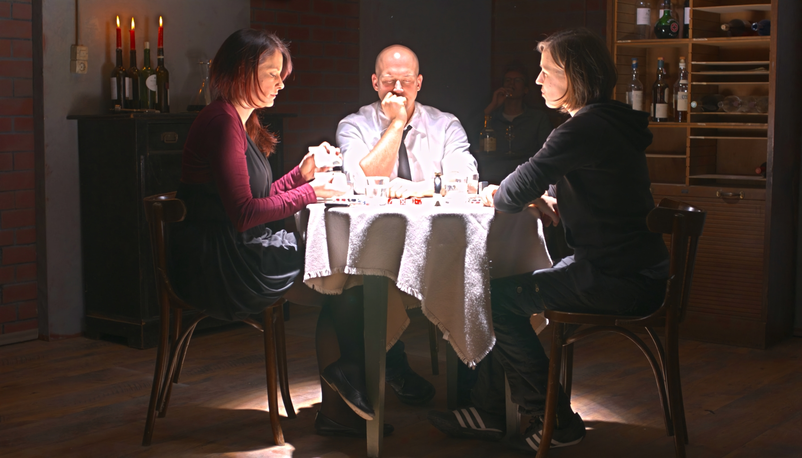
|
Guide: Prof. Shanmuganathan Raman, IIT Gandhinagar Abstract Video Devised a weakly supervised deep learning framework to generate high Frame Rate High Dynamic Range video from a sequence of low Frame Rate alternating exposure Low Dynamic Range frames. |
|
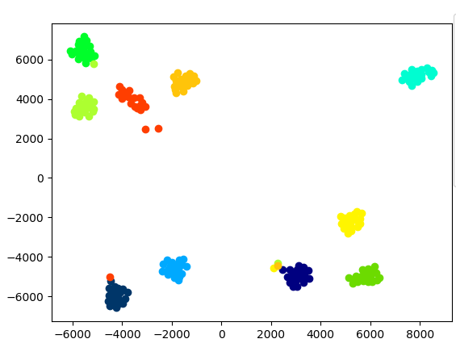
|
Guide: Prof. Subhasis Chaudhuri, Prof. Biplab Banerjee, IIT Bombay Code Report A novel GAN based architecture to generate pseudo prototypes for each class to avoid the catastropic forgetting in Incremental setup. |
|
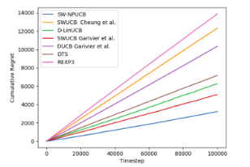

|
Guide: Prof. D. Manjunath, IIT Bombay Under Progress Introduced a new setting in non-stationary bandits by considering the means of arms to vary in a periodic fashion. Proposed two new algorithms for the perfectly periodic setting, D-PUCB and SW-PUCB, relying on discounted and sliding window approaches respectively and showed a logarithmic regret, validated by their performance on synthetic data. |
|
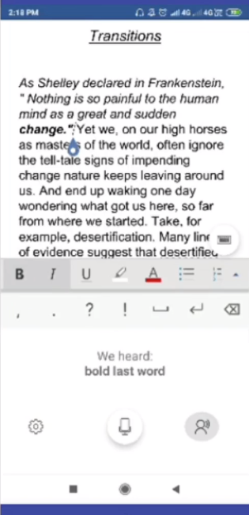
|
Guide: Abhishek Agarwal, Microsoft R&D India Code Report Developed and Integrated a Size Optimized Dynamically Downloadable Entity Recognizer and Intent Classifier Model for enabling Offline Voice Commanding in Microsoft Word App |
|
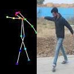
|
Guide : Prof. Shanmuganathan Raman, IIT Gandhinagar Architecture 2-way GAN for Human Pose Transfer conditioned on input image and a target pose to generate a large number of fake human images in different poses and varied backgrounds |

|
Guide : Prof. Prasanna Chaporkar, IIT Bombay Code Report Modelled and proved the NP-Hard Optimal Network Allocation problem as an exact potential game. Graphical comparison of the convergence of potential functions of 3 Algorithms: Best Response Dynamics(BRD), Spatial Adaptive Play and Concurrent-SAP on a simulated randomized input to emulate real-world scenario. |
|
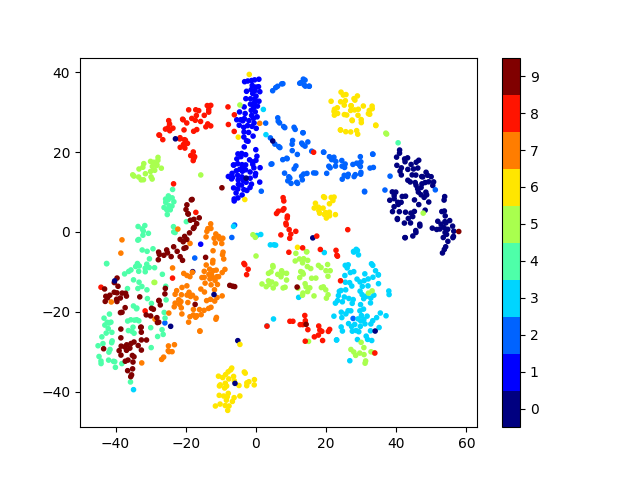
|
Guide : Prof. Biplab Banerjee, IIT Bombay Code Learnt a Discriminative Dictionary for sparse coding via Label Consistent K-SVD(LC-KSVD) followed by a nonlinear feature extraction method, Kernel Null Folley-Sammon Transform(KNFST), for classifying Open set samples on MNIST |
|
Projects |
|
|
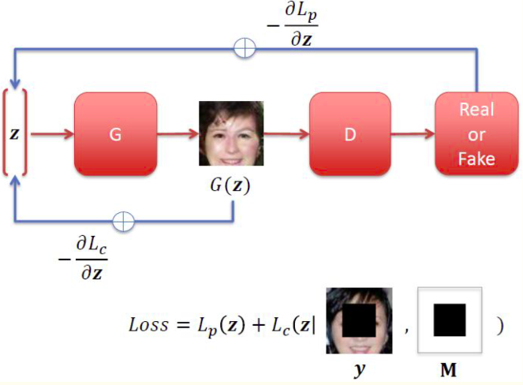
|
Course: CS736 - Medical Image Computing Code Slides Implementation of paper Semantic Image Inpainting. Performed image inpainting by finding an optimal latent vector lying on the latent image manifold and closest to the given corrupted image using context and prior loss followed by Poisson Blending |
|
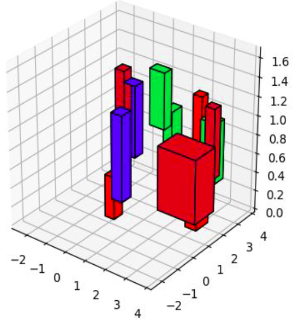
|
Robotic Vision Scene Understanding Challenge 2021 Guide: Prof. Sharat Chandran, IIT Bombay, Course CS763: Computer Vision Code Slides Using RGB and depth images from the traversal of bot, performed 3D object detection leveraging object detection networks. Created a 3D semantic map of the environment with bounding boxes around each object using 3D NMS algorithm |
|
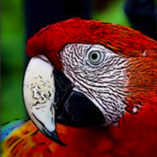
|
Guide: Prof.Biplab Banerjee, Research Project Code Slides Cartoonised real life images to the domain of Anime style images leveraging the network of Cartoon GAN. Initialised the Generator with an Image Abstraction technique employing DoG and Bilateral filters to get better results |
|
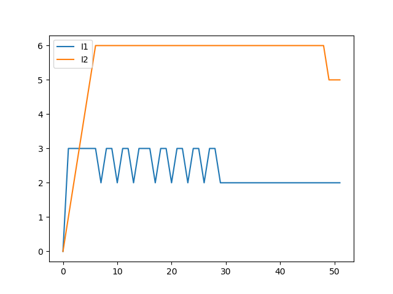
|
Guide: Prof. D. Manjunath, Supervised Research Exposition Code Summary We consider an SAIR model between two communities and try maximise their economic activity. The problem statement is practical considering the COVID-19 pandemic where the government and each individual is put into a tradeoff situation where he wants to maximise his economics at the same time not expose too much that he gets infected. For a simpler case, we assume 2 commnities interacting, a sparse and rich community C1 and a densely populated and poor community C2 |
|
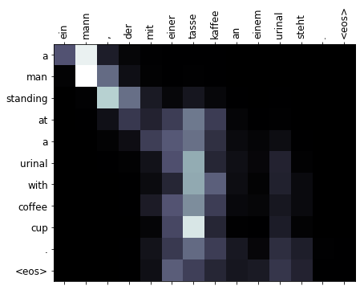
|
Course: CS626 - Speech, Natural Language Processing and the Web Code Report NMT model based on RNNsearch model with minimal parameters and Time taken for training on Multi30K dataset, to achieve a decent Bleu score as compared to a standard Transformer |

|
Course: GNR638 - Machine Learning for Remote Sensing-II Code
Implementation of paper Deep Image Prior. Exploiting the inherent property of CNN to reluctantly fit on a noisy image when started with uniform noise to get off the Prior term and reconstruct the original image in a zero-shot fashion. Producing excellent results even when 80% of pixels removed form original image. |
|
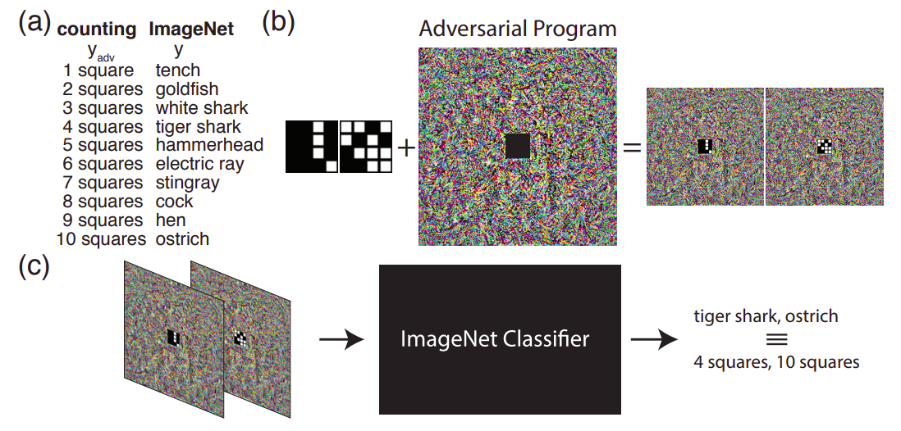
|
Course: CS663 - Digital Image Processing Code Report
Implementation of paper Adversarial Reprogramming of Neural Networks . Computed a single adversarial perturbation added to all test inputs to reprogramme ImageNet classification model on CIFAR-10 |
|
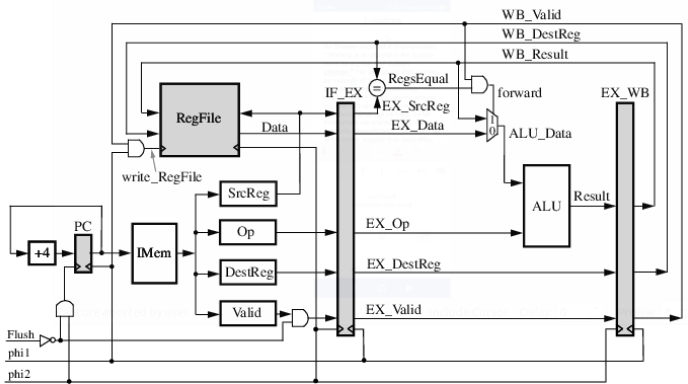
|
Course: EE309 - Microprocessors Code Report 16 bit 6-stage pipelined processor based on Little Computer Architecture. Executes 15 instructions with single and double wide fetch execution. |
|
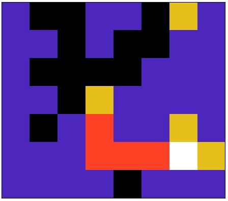
|
Course: CS747 - Foundations of Intelligent and Learning Agents Code Report Finds the shortest path from a given start point to multiple end points in a maze using Value Iteration algorithm. |
|
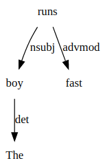
|
Course: CS626 - Speech, Natural Language Processing and the Web Code Report A tool to convert a Constituent Parse tree to Dependency Parse tree and Vice versa |
|
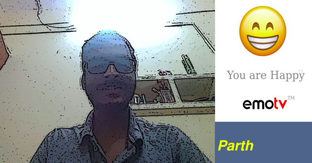
|
Institute Technical Summer Project Code Report Predicts the mood of a person with additional features of turning on appropriate music and creating a caricature of the person |
Teaching Assistant
- CDEEP AIML: Artifical Intelligence and Machine Learning [Spring 2020-21]
- GNR 638: Machine Learning for Remote Sensing-II [Autumn 2020-21]
Scholastic Achievements
- Achieved perfect 10/10 Minor GPA in Artificial Intelligence and Data science.
- Awarded AP grade(Top 1%) for outstanding performance in courses GNR652 and GNR638: Machine Learning for Remote Sensing [2019]
- Secured All India Rank 170 in JEE Advanced with a perfect score of 122/122 in Maths [2017]
- Recipient of the prestigious Kishore Vaigyanik Protsahan Yojana fellowship(SA Stream) with All India Rank 275 [2016]
- Successfully cleared NSEC and appeared for Indian National Chemistry Olympiad(INChO) [2016-17]
- Successfully cleared NSEA and appeared for Indian National Astronomy Olympiad(INAO) [2015-16]
- Recipient of National Talent Search Examination fellowship by NCERT, Govt. of India [2015]
- Successfully cleared NSEJS and appeared for Indian National Junior Science Olympiad [2014]
- Achieved International Rank 2 in 2015 and Rank 3 in 2012 in National Science Olympiad conducted by Science Olympiad Foundation.
Coding Skills
- Python
- C++
- HTML
- VHDL
- Matlab
- Java
Contact
Address Info
1400 Midvale Avenue
Los Angeles, California - 90024